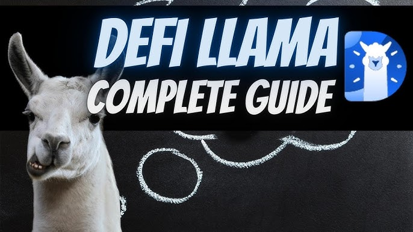

Defi Llama Swap has rapidly emerged as a foundational piece of infrastructure, profoundly impacting how decentralized finance (DeFi) liquidity is accessed and utilized. Operating as a meta-aggregator, it does not create new pools but rather acts as an intelligent conduit, channeling demand to the most efficient supply sources across the entire multi-chain landscape. This mechanism fundamentally changes market dynamics, rewarding competitive pricing, resolving fragmentation, and ultimately increasing the overall utility and depth of decentralized liquidity.
Defi Llama Swap employs a unique two-tiered approach to liquidity aggregation, setting it apart from first-generation aggregators that only query direct Automated Market Makers (AMMs).
Firstly, its engine performs direct, deep-dive queries into the liquidity pools of hundreds of individual DEXs (like Uniswap, Curve, Balancer) across all supported blockchains.
Secondly, and critically, it aggregates the best-found routes from other top-tier aggregators (like 1inch and CowSwap), effectively treating their optimized routes as highly liquid "pools" of their own.
This meta-aggregation capability ensures that Llama Swap casts the widest net possible, maximizing the probability of finding the absolute best execution price available in the market at any moment.
The routing algorithm dynamically analyzes thousands of potential paths—including single swaps, multi-hop swaps, and order splitting—to determine the optimal combination of liquidity sources.
This intelligence allows Llama Swap to utilize small, fragmented pockets of liquidity that might otherwise be overlooked, stitching them together to fulfill large orders efficiently.
The aggregation is continuous and real-time, relying on the robust data feeds of the DefiLlama platform to ensure the information on liquidity depth and current pricing is instantly accurate.
By unifying these diverse sources, Llama Swap ensures that the end-user views the entire decentralized market as a singular, highly liquid entity, regardless of the underlying technical fragmentation.

Defi Llama Swap drives a powerful network effect in DeFi, where its increased utility for traders translates directly into benefits for liquidity providers and the protocols themselves.
As more users adopt Llama Swap for its best-price guarantee, the volume of executed trades routed through the platform increases dramatically, enhancing its status as a critical piece of infrastructure.
This growing volume is channeled directly into the most competitive liquidity pools, creating a positive feedback loop: high volume leads to high fees for Liquidity Providers (LPs), which attracts more LPs and deeper liquidity.
Protocols are incentivized to maintain the tightest spreads and deepest liquidity to consistently be chosen by Llama Swap's routing engine, fostering greater overall market efficiency.
The network effect extends to data transparency; as more protocols integrate with DefiLlama for analytics, Llama Swap gains even greater visibility into their liquidity, improving its routing accuracy and further attracting users.
By offering an impartial, fee-free service, Llama Swap becomes the most trusted gateway to DeFi, accelerating the migration of trading activity away from centralized exchanges.
The multi-chain support amplifies this effect, as the volume is distributed across various ecosystems, kickstarting a network effect on newer Layer 2 solutions with superior economics.
In essence, Llama Swap becomes the central hub where the network effects of high volume, deep liquidity, and best price assurance converge, fueling growth across the entire ecosystem.
Defi Llama Swap increases market depth not by physically adding capital, but by maximizing the utility of the capital that is already deployed across decentralized exchanges.
The intelligent order splitting feature is key: by dividing a large trade into smaller chunks and executing them across multiple pools, Llama Swap taps into various liquidity reserves simultaneously.
This allows much larger trades to be executed with a lower overall price impact than if they were sent to a single DEX, functionally increasing the effective depth of the market for high-volume traders.
By routing volume to pools that may have less visibility but offer the best price, the aggregator ensures that all liquidity, regardless of its location or protocol, contributes to the overall market depth.
The cross-chain functionality further deepens the market by treating liquidity on different chains as part of a single, accessible reserve, increasing the available depth for cross-chain swaps.
This efficiency reduces the risk of slippage, which in turn encourages institutional and professional liquidity providers to deploy larger amounts of capital, confident that it will be utilized effectively.
The transparency provided by the DefiLlama data platform also gives LPs confidence regarding the overall volume and health of the pools they contribute to, sustaining deeper capital commitments.
In summary, Llama Swap transforms a fragmented, shallow pool of capital into a unified, much deeper market by ensuring that every dollar of decentralized liquidity is actively participating in price discovery.
Liquidity fragmentation—the challenge of capital being spread across numerous, isolated DEXs and blockchains—was a primary hurdle for early DeFi traders, a problem Llama Swap fundamentally addresses.
In the past, a trader had to manually check Uniswap, Sushiswap, and other protocols, and then factor in network fees, making finding the optimal trade virtually impossible.
Llama Swap solves this by creating an execution layer that views all fragmented liquidity as a singular, unified resource, abstracting the complex comparison process away from the user.
Its meta-aggregation ensures that even if a small, specialized DEX on a minor chain offers the best price for a specific pair, Llama Swap will find and route the order there if it’s the most economical route.
The multi-chain support is the ultimate solution to fragmentation, as it bridges the gap between different Layer 1s and Layer 2s, treating all of them as equally accessible components of the market.
By providing a single point of access, Llama Swap eliminates the need for traders to hold multiple accounts or switch protocols, effectively unifying the entire market experience.
This unification dramatically improves market efficiency and capital velocity, as funds are constantly being channeled to where they are most efficiently used, reducing pockets of idle capital.
The result is a highly competitive, singular decentralized market where liquidity providers must compete based on core product offerings rather than geographical or chain isolation.
Decentralized trading efficiency is enhanced by Llama Swap primarily through the application of superior data-driven intelligence to the trade execution process.
The enhanced efficiency starts with **Price Discovery**, where the aggregator instantly identifies the global best price, eliminating the time and effort a user would spend manually searching.
It enhances **Execution Efficiency** by using algorithms to select the most gas-optimized smart contracts and the shortest multi-hop paths, ensuring the trade settles quickly and at the lowest possible cost.
The **Risk Efficiency** is improved as the system automatically factors in slippage and price impact, guiding users toward routes that guarantee the highest final token output.
For large volume traders, the enhanced efficiency means they can move significant capital with less market disruption, reducing their operational costs and improving their final yield.
The multi-chain routing adds a layer of **Capital Efficiency**, ensuring that assets are not stuck on a high-fee chain when a cheaper, equally liquid option is available elsewhere.
By integrating protections against Maximal Extractable Value (MEV) through underlying protocols like CowSwap, Llama Swap also enhances the fairness and integrity of the trade execution.
In essence, Llama Swap transforms decentralized trading from a slow, fragmented, and often inefficient process into a highly automated, cost-optimized, and professionally executed activity.
Defi Llama Swap exerts significant influence over market dynamics by instituting a strong **meritocracy** in the decentralized exchange landscape.
It forces DEX protocols to constantly compete on their core offerings: the tightness of their spreads, the depth of their liquidity, and the efficiency of their smart contracts.
Protocols that fail to offer competitive pricing or suffer from high slippage are bypassed by the routing engine, leading to a natural attrition of inefficient liquidity sources.
This dynamic accelerates innovation among AMM designs, with protocols continuously developing new concentrated liquidity and fee-tier models to attract the volume driven by the aggregator.
Llama Swap’s influence extends to the multi-chain dynamic, acting as an arbiter that validates the efficiency of new Layer 2 solutions by channeling high volumes to those with the best gas costs.
The transparency of the platform, backed by the DefiLlama data, reduces informational asymmetry, enabling both traders and LPs to make better, more informed decisions based on verifiable metrics.
It also stabilizes market prices by rapidly identifying and exploiting arbitrage opportunities within its routing, ensuring that prices across different protocols remain tightly correlated and efficient.
Ultimately, Llama Swap acts as a powerful, non-custodial central force that demands excellence from all protocols in the decentralized ecosystem, fostering a healthier and more competitive market.
/defillama.jpg)
Defi Llama Swap’s success is built not on traditional partnerships, but on the successful integration of its core product with the entire DeFi ecosystem, including its direct competitors.
The most critical "partnerships" are the **technical integrations** with other leading DEX aggregators (like 1inch, CowSwap, etc.), whose optimized routes Llama Swap incorporates into its own search logic.
Successful integration with dozens of major **DEX protocols** (Uniswap, Sushiswap, Curve, etc.) is vital, as these provide the underlying liquidity that Llama Swap leverages for execution.
The platform maintains key relationships with **blockchain development teams** and major **Layer 2s** to ensure timely and seamless integration of new networks, bridging protocols, and cross-chain standards.
Llama Swap benefits immensely from the trust built by its parent organization, DefiLlama, which has forged an organic, data-sharing relationship with virtually every protocol in the DeFi space.
The non-profit, public-good nature of the Defi Llama organization fosters trust, making protocols willing to cooperate and integrate their data and liquidity paths with the aggregator.
Its collaboration with **security auditing firms** ensures that the underlying protocols it uses are continually verified, contributing to the overall trust that encourages liquidity providers to deploy capital.
These cooperative, technical relationships, built on a foundation of data transparency, are the true drivers behind Llama Swap's ability to aggregate and utilize the vast pools of decentralized liquidity.
In the long term, Defi Llama Swap is poised to guide the evolution of decentralized liquidity toward a model of near-perfect efficiency and complete capital fungibility.
It will likely accelerate the specialization of liquidity, rewarding AMMs that focus on specific asset classes or advanced curve models, as Llama Swap will always find the most specialized pool for any trade.
The platform's continued multi-chain dominance will solidify the trend of liquidity flowing away from costly L1s to highly efficient L2s, optimizing global capital allocation across DeFi.
Defi Llama Swap will become the central point for **cross-chain liquidity routing**, essentially making the concept of an asset's "chain location" irrelevant for trading purposes.
Its influence will likely lead to greater standardization of token addresses, bridging protocols, and smart contract interfaces to simplify the complex data aggregation process.
The perpetual competition for volume driven by Llama Swap will compress trading fees across the entire market, making DeFi a progressively cheaper and more attractive option than centralized exchanges.
Long-term evolution will see Llama Swap integrate with more sophisticated financial primitives, potentially routing trades into lending protocols or specialized vaults to further increase efficiency.
Ultimately, Defi Llama Swap ensures that the future of decentralized liquidity is transparent, unified, and always available at the most optimized price, solidifying its role as the industry's indispensable execution layer.